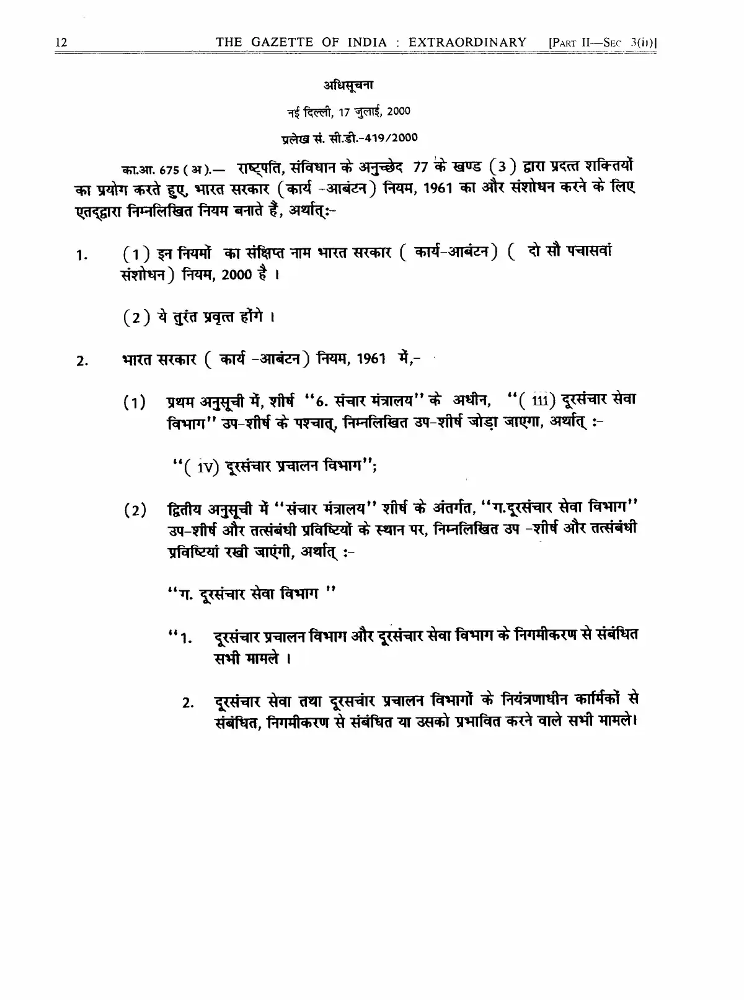
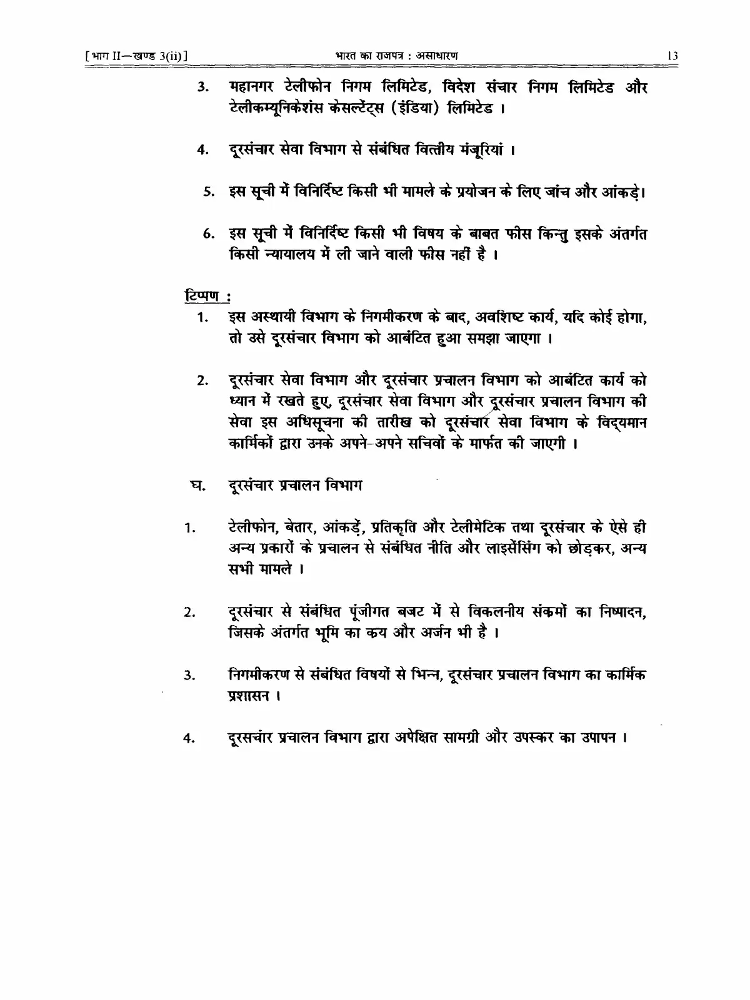
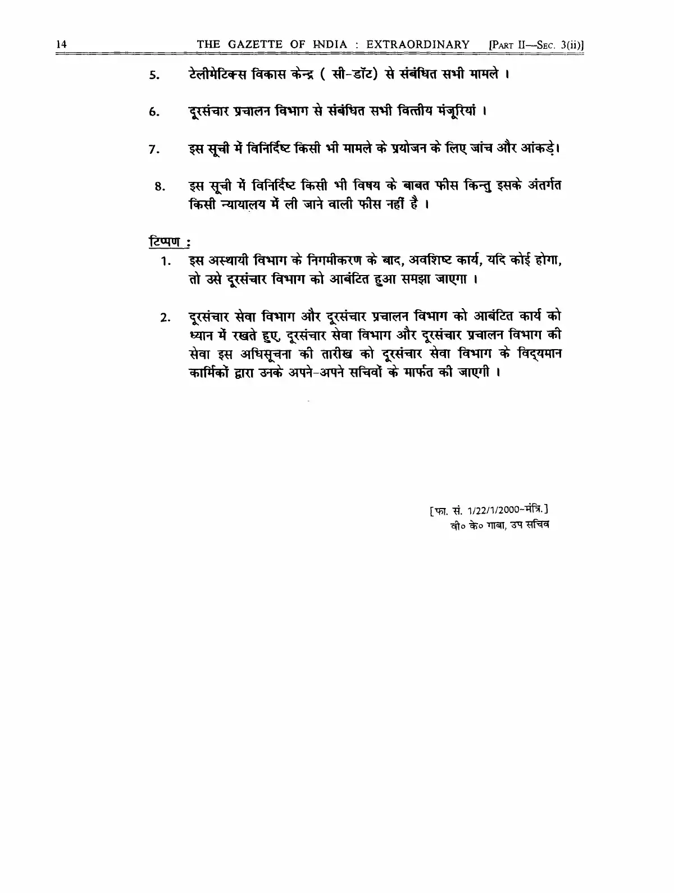
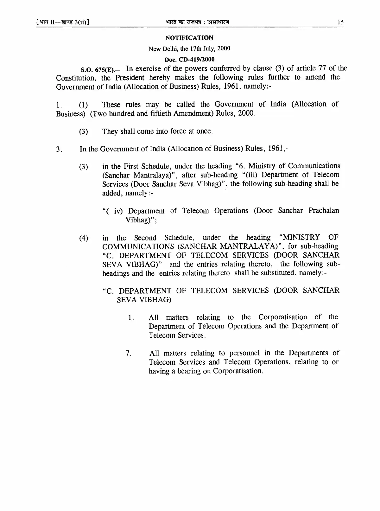
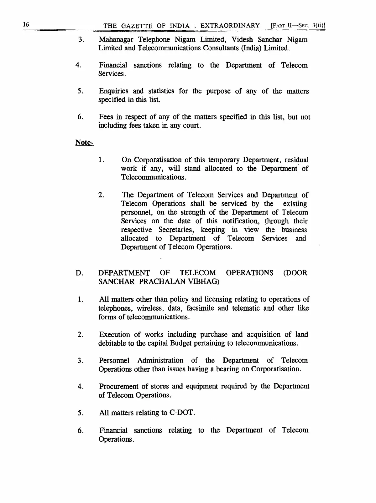
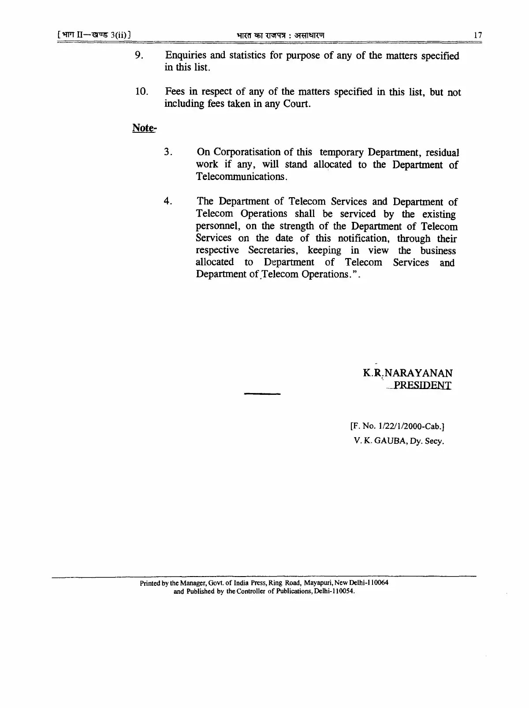

Amendment #250 (S.O. 675(E), 2000)
2 changes: 1 to the First Schedule, 1 to the Second Schedule. 2 applied
What it did to the ministries
- grewMinistry of Communications grows from 30 to 40 subjects change 1, 2 · histories: Communications
The order, page by page
Page 1 of 6

Page 2 of 6

Page 3 of 6

Page 4 of 6

12after Schedule 1 › Ministry of Communications › Department of Telecom Services
- iv. Department of Telecom Operations
applied at schedule 1 › ministry 7 › department iv in the Rules after #250
Schedule 2 › MINISTRY OF COMMUNICATIONS › DEPARTMENT OF TELECOM SERVICES
- C. DEPARTMENT OF TELECOM SERVICES
- 1. All matters relating to the Corporatisation of the Department of Telecom Operations and the Department of Telecom Services.
- 7. All matters relating to personnel in the Departments of Telecom Services and Telecom Operations, relating to or having a bearing on Corporatisation.
- 3. Mahanagar Telephone Nigam Limited, Videsh Sanchar Nigam Limited and Telecommunications Consultants (India) Limited.
- 4. Financial sanctions relating to the Department of Telecom Services.
- 5. Enquiries and statistics for the purpose of any of the matters specified in this list.
and 16 more
- 6. Fees in respect of any of the matters specified in this list, but not including fees taken in any court.
- Note-
- 1. On Corporatisation of this temporary Department, residual work if any, will stand allocated to the Department of Telecommunications.
- 2. The Department of Telecom Services and Department of Telecom Operations shall be serviced by the existing personnel, on the strength of the Department of Telecom Services on the date of this notification, through their respective Secretaries, keeping in view the business allocated to to Department…
- D. DEPARTMENT OF TELECOM OPERATIONS
- 1. All matters other than policy and licensing relating to operations of telephones, wireless, data, facsimile and telematic and other like forms of telecommunications.
- 2. Execution of works including purchase and acquisition of land debitable to the capital Budget pertaining to telecommunications.
- 3. Personnel Administration of the Department of Telecom Operations other than issues having a bearing on Corporatisation.
- 4. Procurement of stores and equipment required by the Department of Telecom Operations.
- 5. All matters relating to C-DOT.
- 6. Financial sanctions relating to the Department of Telecom Operations.
- 9. Enquiries and statistics for purpose of any of the matters specified in this list.
- 10. Fees in respect of any of the matters specified in this list, but not including fees taken in any Court.
- Note-
- 3. On Corporatisation of this temporary Department, residual work if any, will stand allocated to the Department of Telecommunications.
- 4. The Department of Telecom Services and Department of Telecom Operations shall be serviced by the existing personnel, on the strength of the Department of Telecom Services on the date of this notification, through their respective Secretaries, keeping in view the business allocated to Department of…
applied at schedule 2 › ministry MINISTRY OF COMMUNICATIONS › department C in the Rules after #250
read page break
Page 5 of 6

Page 6 of 6

How this document was read
Edits to the reading
| Date | By | Edit | Before → after |
|---|---|---|---|
| 12 November 2026 | claude | word corrected | |
| 12 November 2026 | claude | word corrected |
From the Government of India (Allocation of Business) Rules, 1961 and their amendments, as published by the Cabinet Secretariat (cabsec.gov.in), read by orgpedia. The readings of the older scanned gazettes have known gaps.